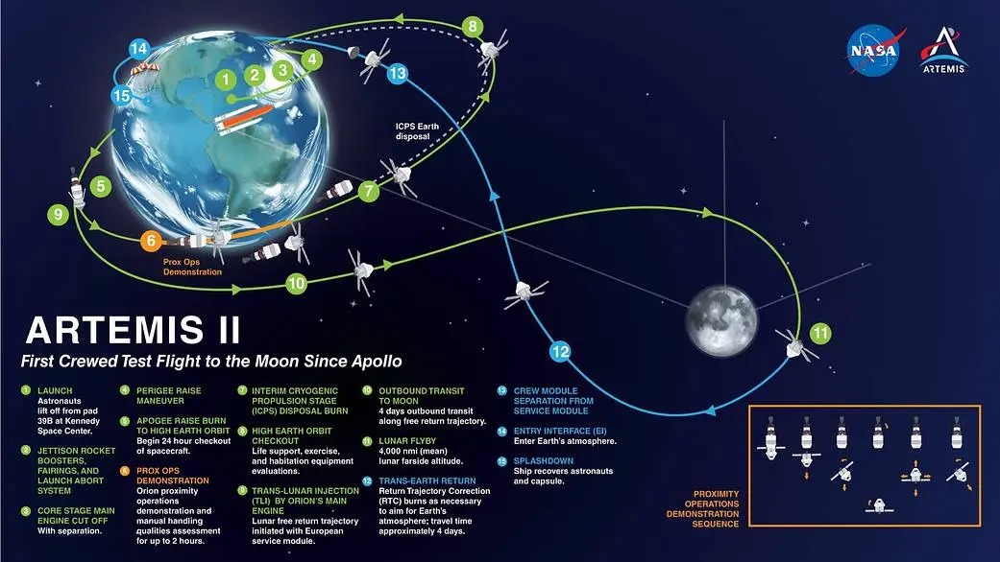
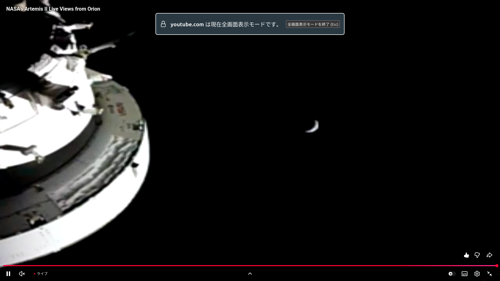
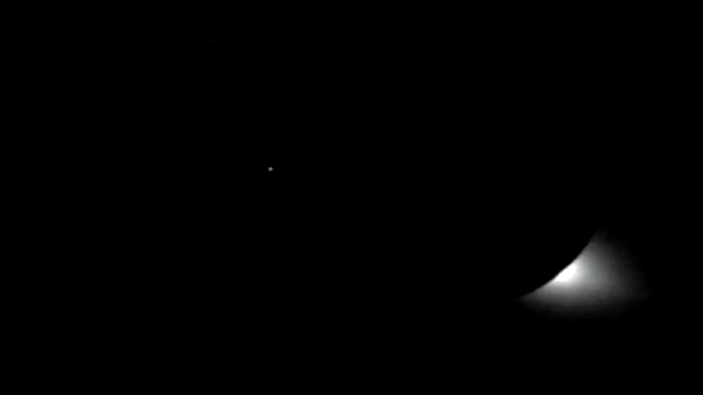
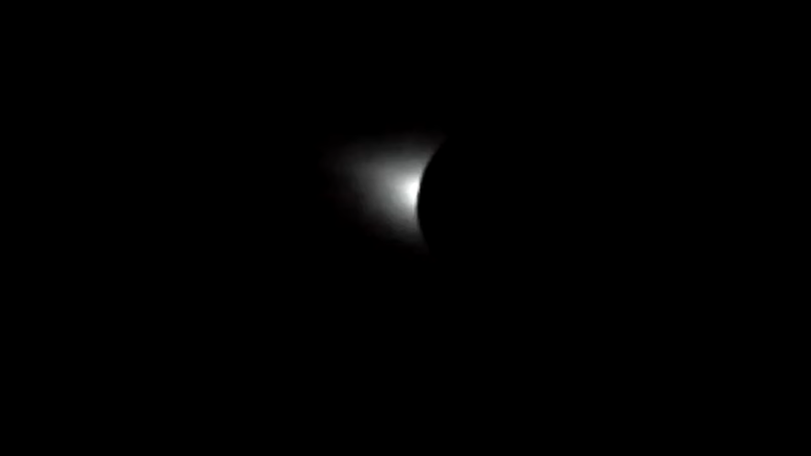
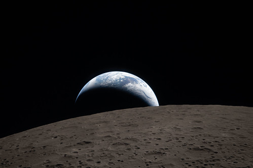
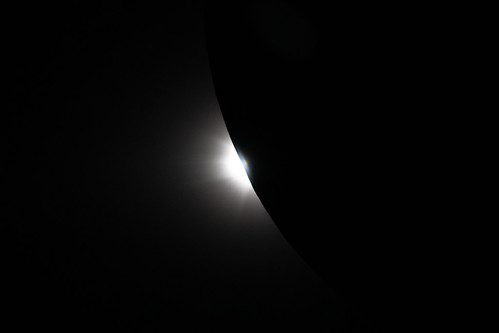
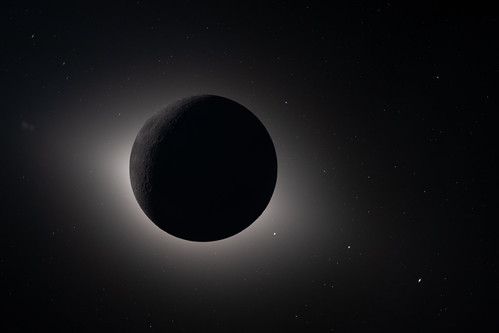

ネトフリに再契約しなくてもよかったのに

ネトフリに再契約しなくてもよかったのに
NASA Artemis II ミッションにおける Orion 有人宇宙船が月の裏側を回り込むのが日本時間で 2026-04-07 朝とのことで，どこで配信するのかなと思ってたらネトフリで配信するとか聞こえてきて。
テレビアニメを（ネットでも）あまり見なくなって，だいぶ前に Netflix のサブスクリプションを解除していた。 今年の WBC のときは（競技スポーツに関心が薄いこともあり）完全にスルーしていたが，今回は「またネトフリか」と思いつつ，結局は再契約してしまった。
メンバーシップは解除したけどアカウント自体は残ってたと思ったのだが，どうやらアカウントも消えてたみたいで，あらためて登録からやり直した。 前に使ってたメールアドレスは使えたが，以前利用してたときの情報は綺麗になくなってるようだ。 まぁ，これはこれでいいか。 どうせすぐ解約するし。
あとで NASA の公式 YouTube チャンネルで枠が立ってると Bluesky で教えていただいた。
実際にネトフリの配信を見てみたが NASA の公式配信の映像を使ってるだけみたいで，これなら宇推くりあさんの YouTube 配信で十分じゃん orz
ネトフリのサブスクリプションはソッコーで解除しましたよ。 契約の関係で5月5日までは有効みたいなので，せっかくだから『超かぐや姫！』でも見るか。 1ヶ月で解約なら映画チケット代より安いし，これで元は取れるやろ（笑）
Artemis Program & Artemis II Mission
今回の Artemis II ミッションは Artemis 計画のひとつ。
Artemis 計画は
- 20世紀のアポロ計画以来の有人月面着陸を実現し，月面での持続的な有人活動の拠点を築くことを目指す
- 大型ロケット SLS（Space Launch System）の開発
- 有人宇宙船 Orion および着陸機 HLS (Human Landing System) の開発
- 月軌道を周回する有人拠点 Gateway の建設
- アルテミス合意（Artemis Accords）に基づく国際協力体制の構築
- 将来の有人火星探査に向けた基盤構築
といった内容で，有人月面着陸に関しては今のところ Artemis V まで計画されている。 なお Gateway については現在，凍結しているらしい。
Artemis II は，有人宇宙船 Orion に4人の宇宙飛行士を乗せて月の裏側を回り込んで帰ってくるミッションだ。

本当は2月に打ち上げ予定だったのが，延びに延びて4月になった。 打ち上がってからは（トイレが故障するとかあったそうだが）概ね順調で今日のイベントと相成ったわけである。
Artemis II 配信を YouTube で見る
NASA 公式チャネルでは，以下の配信枠が立てられている。
- NASA’s Artemis II Live Mission Coverage (Official Broadcast) - YouTube
- NASA’s Artemis II Live Views from Orion - YouTube
- NASA’s Artemis II Crew Flies Around the Moon (Official Broadcast) - YouTube
最初の2つは打ち上げからずうっと配信されているようだ。 最後のが今回の月周回イベント用の枠で，昨夜から配信が始まった。 コメントが有効になってるので，ずうっと配信しっぱなしということはないだろう？
日本語での解説では，この手のイベントではおなじみ宇推くりあさんの同時視聴ライブ配信がとても参考になった。 彼女は Artemis I から引き続き，打ち上げから何度か枠を立てて配信されている。
- 【#artemisⅡ】月へ人が行くぞ！！アポロ計画以来の有人月周回飛行！SLSロケット打上 #宇推くりあ - YouTube
- 【#artemisⅡ】アルテミス計画、いよいよ月へ！地球からの最長到達距離記録を更新する瞬間を見届けよう！ #宇推くりあ - YouTube
- 【#artemisⅡ】いよいよ月到達！月の裏側を回って地球の出を見るよ！！ #宇推くりあ - YouTube
ありがたや 🙇
私は深夜は起きていられないので（年寄りは寝るのが早い）深夜の配信はほとんど見逃したが，月の裏側を回るイベントは見ることができた。

慌ててキャプチャしたので要らないものも写っているが，これは Orion が月の裏側から出てきて通信が回復した直後の船外カメラの映像（月の裏側に入っている間は DSN (Deep Space Network) の通信が切れる）。 三日月っぽく見えるのは実は地球である。
その後（Orion から見て）太陽が月に隠される「日食」イベントもあった。


これは太陽が月の後ろに隠れた直後と月の後ろから出てくる直前の映像。 太陽の周囲にあるコロナがこのように見えるのは，なかなか面白かった。
Orion はこれから地球に戻り，順調に行けば4月11日に再突入する予定である。 その時は，もしかしたらこの記事に追記するかも知れない。 どことは言わないが，ググったら既に再突入成功の記事とかあるみたいなので（笑）きっと大丈夫だろう（ちょっと，いやだいぶウケた）
【2026-04-08 追記】 Artemis II からの画像を Flickr で見る
Flickr には2008年から NASA の公式アカウントがあるのだが， Artemis II ミッションの画像もここにアップされている。 いくつか挙げておこう。



最後の「日食」の写真は素晴らしい。
月周囲の暈（halo）がコロナによるものか黄道光によるものか（あるいはその両方によるものか）については議論があるらしい。 また月（の影部分）地球照で僅かに照らされているのも分かる。 あとは月と背景の星星との位置関係か。 学術的にも色々と興味深い写真のようだ。
こういった画像を CC license 下で公開してくれるのはありがたい。 どこぞの国の月探査とは大違いやね（笑）
テレビはホンマに要らなくなったな
WBC のときは（最初に言ったように）私は競技スポーツに関心が薄いので Netflix が独占配信をやるとか聞いても「ふーん」程度の感想だったのだが，今回もし Netflix が独占配信するとかやりだしたらちょっと嫌だったかも知れない。 だが，まぁ，ありそうな話ではある。 昔 NHK と組んで月探査機「かぐや」からの映像を独占させた JAXA とか，いかにもやらかしそうだ。
今回は私の先走りの思い込みで本当によかった。 新聞・テレビを見ないので，今回の Artemis II ミッションが日本でどのように報道されているのか知らないし，知らなくても全く問題なく欲しい情報を摂取できる今の状況は幸せなのかも知れない。
参考

- 天体物理学
- Arnab Rai Choudhuri (著), 森 正樹 (翻訳)
- 森北出版 2019-05-28
- 単行本
- 4627275110 (ASIN), 9784627275119 (EAN), 4627275110 (ISBN)
- 評価
興味本位で買うにはちょっとビビる値段なので図書館で借りて読んでいたが，やっぱり手元に置いておきたいのでエイヤで買った。まえがきによると，この手のタイプの教科書はあまりないらしい。内容は非常に堅実で分かりやすい。理系の学部生レベルなら問題なく読めるかな。